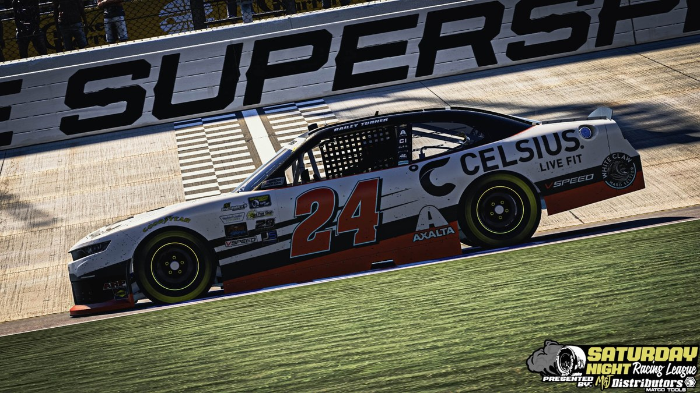

Bailey Turner Claims Third Win of Season 6 at Nashville Superspeedway

The Saturday Night Racing League Cup Series returned to Nashville Superspeedway for the third time in series history on Saturday Night for Race 13 of 22, and it was Bailey Turner taking the checkered flag in the #24 Celsius/Axalta Chevrolet to claim his third victory of the Season 6 campaign — and with it, the championship points lead.
J R Shepherd set the pace in qualifying to earn the pole, but it was Turner and Adam Cabot who controlled the majority of the action. Cabot led 58 laps and Turner 64 in a spirited battle at the front, with Rhea Massey also making his presence felt by leading 14 laps. Casey Lakatos added 8, Phillip Brewer 3, and pole-sitter Shepherd led 1 — giving the race 8 leaders and 10 lead changes across 150 green flag laps with not a single caution on the night.
When it mattered most, Turner had the car to beat. He took the lead for good and pulled away to claim the win, with Cabot finishing a strong 2nd for his second consecutive podium. Dakota Floyd2 charged from 14th to complete the podium in 3rd, while Phillip Brewer finished 4th and Kenny Kibbey rounded out the top 5.
Championship leader A.J. Stravato came home 10th, and the result has major implications at the top of the standings. Turner’s win vaults him into the points lead with 498 points — just 4 ahead of Stravato (494) in what has become a two-driver title fight with 9 races remaining in the regular season. Kenny Kibbey sits 3rd at 465, a full 33 points behind Turner.
The SNR Cup Series is back in action next Saturday Night at the Old School Legacy 2008 version of Atlanta Motor Speedway. Tune into VSPEED for full live coverage!